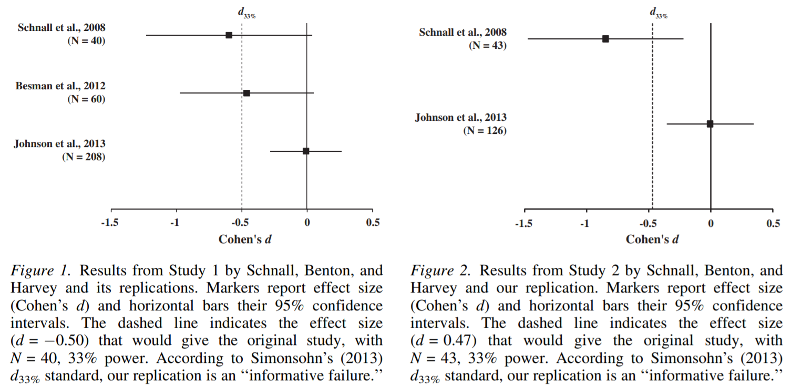

|
Does cleanliness influence moral judgments? Direct replications of Schnall, Benton, and Harvey (2008) Social Psychology 10.1027/1864-9335/a000186 Replications 2
|
HTML
|
Study-Level Transparency Edit study details
Study 1
- Excluded data (subjects/observations): Full details reported in article.
- Experimental conditions: Full details reported in article.
- Outcome measures: Full details reported in article.
- Sample size determination: Full details reported in article.
Study 2
- Excluded data (subjects/observations): Full details reported in article.
- Experimental conditions: Full details reported in article.
- Outcome measures: Full details reported in article.
- Sample size determination: Full details reported in article.
Key Figures/Tables Edit key figures/tables
|  |
Replication Details Edit replication details
Replications 2 are part of the cleanliness priming effect collection Related Articles/Collections Edit related articles/collections
-
Replications 2 are part of the cleanliness priming effect collection

Previous Funders


Current Funders


*Thanks to Felix Schonbrodt for hosting CurateScience.org